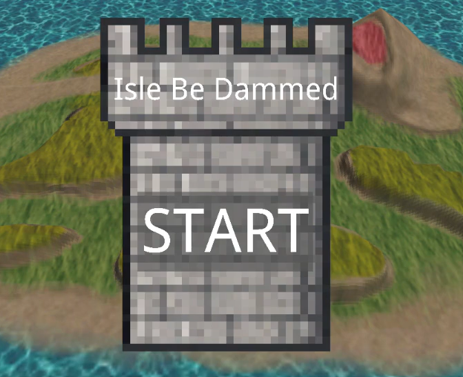

FireAnt is a custom ECS C++ engine for strategy games, developed by a team of seven programmers over eight weeks, running on both PC and Nintendo Switch. The video shows what the engine can do. This page is about my part of it: the in-game UI system and getting the engine running on the Switch.
Going into sprint 3 we still had no in-game UI, which is a big risk for a strategy game.
I pushed for us to start on it and formed a small strike team with Flemming to build it together.
Before writing any code we spent a few long whiteboard sessions agreeing on what the system should be and how to split the work.
Once we had that, development went fast enough that the rest of the team complimented us on it.
My parts were the element transforms, the UI render pass, colour and texture backgrounds,
text scaling, and controller navigation between buttons.
Every piece of UI is an entity with a UIElement component: a 2D transform with a size and padding, plus options like a background colour or texture. Text and buttons are extra components on top of that. Elements can be parented to each other, and a parent automatically grows to fit its children plus its padding, so a window always wraps its contents. Anything you don't set falls back to a default value.
auto windowEntity = bee::Engine.ECS().CreateEntity();
auto& windowUIElement = bee::Engine.ECS().CreateComponent<bee::UIElement>(windowEntity);
windowUIElement.Name = "Window";
windowUIElement.SetUseColor(true);
windowUIElement.SetColor(glm::vec4(0.0f, 0.0f, 1.0f, 1.0f));
windowUIElement.SetTexture(bee::FileIO::Directory::Assets, "window_background.png");
windowUIElement.SetTextureWrapping(true);
windowUIElement.SetTranslation(glm::vec2(0.0, 0.0f));
windowUIElement.SetPadding(glm::vec2(50.0f));
auto textEntity = bee::Engine.ECS().CreateEntity();
auto& textUIElement = bee::Engine.ECS().CreateComponent<bee::UIElement>(textEntity);
textUIElement.SetParent(windowEntity);
textUIElement.Name = "Text2";
textUIElement.SetUseColor(true);
textUIElement.SetColor(glm::vec4(0.0f, 1.0f, 0.0f, 1.0f));
bee::Engine.ECS().CreateComponent<bee::TextElement>(textEntity, textEntity, "Teacher of the year: [your name here]");
textUIElement.SetScale(glm::vec2(0.1f));Creating a window with text from code
Positions and sizes are authored in pixels, in a 1920 by 1080 reference space that matches the editor viewport. When an element's world matrix is needed, a root element converts its position from that space to normalised device coordinates, while a child is positioned relative to its parent's size instead. Each element's local matrix is then combined with its parent's world matrix, and the result is cached until something changes.
float screenWidth = 1920.0f; // positions are hardcoded with the idea in mind that the max screen is these values,
float screenHeight = 1080.0f; // because that is the case in the editor.
glm::vec2 normalizedTranslation = m_translation; // Start with raw translation
if (m_parent != entt::null)
{
// If there's a parent, position relative to its size instead of the full screen
auto& parentTransform = Engine.ECS().Registry.get<UIElement>(m_parent);
glm::vec2 parentSize = parentTransform.GetSize();
if (parentSize.x != 0 && parentSize.y != 0)
{
normalizedTranslation.x =
((m_translation.x + parentTransform.GetPadding().x * 0.5f) / parentSize.x) * 2.0f - 1.0f;
normalizedTranslation.y =
1.0f - ((m_translation.y + parentTransform.GetPadding().y * 0.5f) / parentSize.y) * 2.0f;
}
}
else
{
// Convert to top-left origin
normalizedTranslation.x = (m_translation.x / screenWidth) * 2.0f - 1.0f;
normalizedTranslation.y = 1.0f - (m_translation.y / screenHeight) * 2.0f;
}
// ... the size is converted the same way, relative to the parent or the screen
glm::mat3 localMatrix = translationMat * scaleMat * rotationMat;
if (m_parent == entt::null)
{
m_worldMatrix = localMatrix;
}
else
{
if (auto* parentTransform = Engine.ECS().Registry.try_get<UIElement>(m_parent))
{
m_worldMatrix = parentTransform->World() * localMatrix;
}
}
m_worldMatrixDirty = false;UIElement::World() — ui_element.cpp (shortened)
In practice, nobody has to write UI in code. Every property has an ImGui control in the editor, and finished UI is saved as a prefab that can be loaded back in.
Every button stores which button is above, below, left and right of it. The D-pad or arrow keys move the selection along those links, and the confirm button presses the selected one. In the editor you set a link by dragging another button from the hierarchy onto one of the four slots. The link is made in both directions at once: dropping a button as my up neighbour also makes me its down neighbour, which halves the work of setting up a menu.
ImGui::Button(upText.c_str());
if (ImGui::BeginDragDropTarget())
{
if (const ImGuiPayload * entityPayload{ImGui::AcceptDragDropPayload("ITEM")})
{
const Entity data{*static_cast<const Entity*>(entityPayload->Data)};
if (Engine.ECS().Registry.try_get<ButtonElement>(data) && data != entity)
{
t->SetUpElement(data);
Engine.ECS().Registry.try_get<ButtonElement>(data)->SetDownElement(entity);
}
}
ImGui::EndDragDropTarget();
}ButtonElement::OnEntity() — button_element.cpp (one of the four directions)
Entity IDs aren't stable between saving and loading, so the links are saved by element name and re-resolved the first time the menu is navigated.
The UI is drawn in its own render pass, on top of the finished frame, with depth testing off and alpha blending on. The pass collects every root element and walks the hierarchy depth first, so a parent is always drawn before its children and children end up on top. Every element is a draw call on one shared quad. The shader combines the background colour, background texture and text texture, and tiled backgrounds compute their UVs from the element size and texture size, so a tiled texture keeps its pixel size however big the element gets.
std::vector<std::tuple<Entity, UIElement>> drawables;
std::vector<Entity> stack;
// Collect root elements first
for (const auto& [entity, uiElement] : Engine.ECS().Registry.view<UIElement>().each())
{
if (!uiElement.HasParent())
stack.push_back(entity);
}
// Traverse the hierarchy using a stack (iterative depth-first)
while (!stack.empty())
{
Entity entity = stack.back();
stack.pop_back();
auto& uiElement = Engine.ECS().Registry.get<UIElement>(entity);
drawables.push_back({entity, uiElement});
for (auto it = uiElement.begin(); it != uiElement.end(); ++it)
stack.push_back(*it);
}
for (auto& [entity, uiElement] : drawables)
{
ApplyMaterial(entity, uiElement);
RenderCurrent(uiElement);
}UIPass::Draw() — ui_pass_gl.cpp (shortened)
Here is the system in the final demo:

Reading the UI code back now, there are four things I would do differently.
Layout lives in the setters. Changing an element's size immediately walks up and recomputes its parent from all of its children,
and scaling walks down through every child. Building a window ends up touching the same elements many times,
and logic like that inside a component is hard to test. A separate layout pass that runs once per frame on dirty elements
would be cheaper and much easier to reason about.
The reference resolution is fixed. Mapping 1920 by 1080 straight onto the screen keeps elements in the same proportional spot,
but on a different aspect ratio everything stretches. Rotation is also applied before a non-uniform scale, so rotated elements skew.
Anchors, a scale that respects the aspect ratio, and rotating in pixel space would fix both.
Mouse picking does its own maths. To check whether the mouse is over a button,
the code adds up translations and padding through the hierarchy separately from World(), and ignores rotation and scale.
That is two sources of truth for where a button is. Transforming the mouse position by the inverse of the same world matrix
the renderer uses would always match what's on screen.
The draw list copies every element. Storing a full UIElement per entry copies its strings and shared pointers every frame.
Storing just the entity would be enough, and for bigger interfaces, batching elements into fewer draw calls would be the next step.
Switch support was a hard requirement for the engine, and I took it on from the very first day, as the only one on the team with previous console experience. I set up the platform in our solution and worked through the compile errors, and together with Bogdan, Leo and Erik we got the engine and the demo running on the Switch by the end of the second sprint. The details of that work are under NDA, so I can't share more than that here. What I can talk about is how the engine deals with platform differences, because that part is our own design.
For systems that work completely differently per platform, like the device, file IO and input,
there is a single platform-neutral header, and every platform has its own implementation file in its own folder.
The project file excludes the implementations that don't belong to the platform being built.
The rest of the engine and the game only ever include the shared header, so they don't need to know where they run.
A nice side effect is that a missing implementation is a linker error, not a silent bug.
When a new platform is added, the linker hands you the list of functions that still need to be written.
For differences of one or two lines, a platform define is quicker than a whole new file. The UI system uses one to only check for mouse clicks on PC:
void ButtonManager::UpdateButtons()
{
// ...
#ifdef BEE_PLATFORM_PC
CheckButtonMouseClick();
#endif
CheckButtonNavClick();
}ButtonManager::UpdateButtons() — ui_system.cpp (shortened)
Editor-only code works the same way: it is wrapped in an inspector define, so the game build never compiles editor code it doesn't use. That also made the PC game build faster.
We worked in four sprints with a GitHub project board, split into epics, features and tasks, where every task has its own definition of done and results in one pull request. Every pull request was reviewed by a teammate and had to pass CI before it could be merged. I reviewed a lot of them myself, building and testing every configuration and requesting changes when something didn't meet our code standards.
In the first retrospective I pointed out that I was a single point of failure on the Switch work. If I got stuck or was away, a must-have feature stopped completely, and I also had to be away for a week during sprint 2. From then on we worked in strike teams of at least two people per epic. That is how Bogdan and Leo joined the Switch work, and how Flemming and I ended up building the UI together.
After sprint 3 the mood in the team was low. In the retrospective a lot of people could only name negatives, so I offered to lead it. Grouping the negatives showed that most of them came from a few shared root causes: a sprint planning that wasn't detailed enough, and people not knowing what others had already built. We fixed those by planning sprint 4 properly before starting, sharing progress more on Discord and making our stand-ups more concrete. Ending the retrospective on the positives helped the mood going into the next sprint too.
The first days on the UI system felt slow, because Flemming and I were only talking and drawing on whiteboards. But once we both had the same picture of what we were building, we could split the work and build our parts in parallel without stepping on each other. That planning time paid for itself.
Switch support was planned for the first sprint and took until the end of the second. During the first sprint I was the only one working on it, so every blocker on my side blocked a must-have feature for the whole engine. On top of that, I tend to keep powering through a problem instead of asking for help. At one point we were stuck until Erik found the answer, buried deeper in the documentation than I had looked. Pairing up on risky features, and asking for other people's insight early, means progress never fully stops.
While working on the Switch support I was often bottlenecked by devkit availability,
so I picked up our CI pipeline to work on while waiting. I set up our build action,
and later made our clang-tidy check about four times faster by only linting the files a pull request changed.
I had never touched GitHub Actions before this project, and I came out of it understanding how workflows,
build matrices and runners fit together, plus a bit of YAML.
But the pipeline as a whole was built for a much bigger team than ours.
Every push to every pull request ran three full Windows rebuilds, strict linting and a format check,
which cost us time, frustration and a lot of CI minutes, while the one check that would have protected main the most,
the Switch build, arrived last.
Next time I would start with the smallest pipeline that protects main on every platform we ship on:
one build per push, the full set before merging, outdated runs cancelled, and linting on our own machines.
Then only add checks when they solve a problem we actually have.
Most of my time on FireAnt went into work that is easy to miss: researching and configuring the Switch build, the CI pipeline, reviews and bug fixes. All of it was needed, but very little of it is visible in the final demo. On my next project, Bloom, I made a point of claiming a feature I could own from start to finish: the plants.